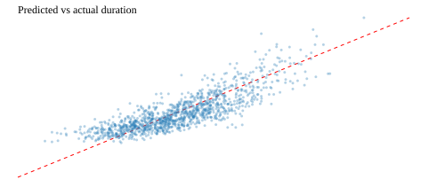

average absolute error
01CMPE 255 · reproducible experiment 01
A clearer read on
taxi trip time.
A compact, evidence-led view of a chronological NYC trip-duration experiment—what the model learned, where it helps, and how the workflow connects end to end.
MODEL MAE81.732 sec
43.1% below baseline
01 / model snapshot
The headline is simple.
The linear model on a log-transformed target is the strongest checked-in result. All figures below are loaded from outputs/metrics.json.
median-duration baseline
02lower MAE vs baseline
03variance explained
04What changed? The model uses pickup time, passenger count, coordinates, and engineered distance features to move from a single median guess to a trip-specific estimate.
02 / performance
Less error, more signal.
Median baseline143.727
Log-target linear model81.732
43.1%MAE reduction
The model reduces MAE by 61.995 seconds against the global median baseline in this run.
baseline model
03 / checked-in evidence
Prediction shape

↗
Predicted vs actual
The diagonal reference line represents perfect agreement. Dispersion is expected: this is a compact, synthetic experiment.
04 / interactive what-if
Sketch a trip.
Explore how distance, pickup time, and passenger count influence a client-side estimate. It is a visual teaching aid—not a live model prediction.
ILLUSTRATIVE ESTIMATErush hour
09:32min : sec
A 2.1 mi trip with 2 passengers, leaving during the evening commute.
2.1 mi routerush-hour context
i
Illustrative by design. This browser calculation is a deterministic, no-noise visualization of the synthetic generator’s directional relationships; it does not load model weights or make a production prediction.
05 / CRISP-DM loop
From question to evidence.
The experiment follows a compact, inspectable path from business framing through reproducible delivery.
Business
understanding
Estimate taxi trip duration with an interpretable, reproducible workflow.
Data
understanding
Use NYC-like trip rows with coordinates, timestamps, passengers, and vendor.
Data
preparation
Clean coordinates and durations; derive time, distance, and delta features.
Modeling
Fit a regularized linear model on log1p duration after a time split.
Evaluation
Compare MAE, RMSE, and R² against global, recent, and hour-conditioned baselines across chronological folds.
Deployment
Expose artifacts in this static UI and keep the Python run path intact.
06 / reproduce locally
One command in.
Evidence out.
Serve this folder to let the browser load the checked-in JSON and SVG artifacts.
$
python3 run_experiment.py$
python3 validate.py$
python3 -m http.server 8000Then open http://localhost:8000